数据来源：知识星球「南半球聊财经」星主 Jason 不跪当日发帖。时间戳为浏览器本地时区（美西），全部为 2026-06-14。 当日发帖数量：8 篇（含图片 15 张）。
今日要点速览
今天 Jason 的 8 篇贴可以串成两条主线。
第一条主线是地缘"去风险"——美伊达成和平协议。 帖 3 和帖 8 报道了一个重磅事件：特朗普在 Truth Social 宣布"与伊朗的协议已经完成"，并授权"免费开放"霍尔木兹海峡、撤除美国海军封锁，喊话"让石油自由流动"。Polymarket 上"6 月 30 日前达成美伊永久和平协议"的概率一度飙到 80%。这件事直接对应帖 4 德银（DB）跨资产观点里的关键假设——"霍尔木兹海峡将在 6 月恢复正常"，进而油价回落。地缘溢价消退，是今天所有资产定价的大背景。
第二条主线是"成长/科技 vs 价值/传统"的极致分化，以及怎么用周期框架去看它。 帖 1（摩根大通）用中美信用脉冲解释为什么仍然超配成长股；帖 2（长江证券）用票据利率的历史低位说明中国实体融资需求仍弱；帖 6（方正证券）展示 A 股科技与传统行业的估值/盈利两极分化；帖 7（广发证券）则把康波、库兹涅茨、人口、朱格拉、库存五个周期"叠在一起"给当下定位。帖 5（中美在拉美的矿产投资）是一条独立的地缘—产业线索，讲大国对关键矿产的争夺。
一句话：地缘风险在退潮（利好风险资产、利空油价），而结构上"科技强、传统弱"的分化仍是中美两地市场的主旋律，分歧只在于这条主线还能走多久。
帖 1 · 14:07 · 摩根大通：用中美信用脉冲看成长 vs 价值 #金融#
帖子原文
JPM：美联储发布了美国 2026 年一季度 Z.1 资金流量数据，同一天中国央行发布了 5 月社融数据。我们用这两组数据来构建美国和中国的信用脉冲 credit impulse。综合来看，这些数据仍支持：成长股 Growth 相对价值股 Value 更有优势。我们把信用脉冲看作"风险折现率"的代理变量，而成长股的定价对这个风险折现率非常敏感。简单说：信用扩张改善 → 风险偏好改善/折现压力下降 → 成长股更容易跑赢。我们用美国和中国信用脉冲平均值做了一个成长/价值轮动信号。自 2018 年以来，这个信号在成长股相对价值股的回测中，命中率为 53%，年化收益约 +9.9%。当前这个信号仍然是：超配成长股，但相比三个月前，信心已经明显降低。
2026 年一季度，美国私人部门信用创造进一步上升。美国信用脉冲从 +1.6 个百分点 升至 +2.5 个百分点。这对成长风格是正面信号。相反，中国 5 月社融是连续第三个月放缓。中国信用脉冲已经降至 -0.4 个百分点。这对成长风格的支撑变弱。两者合起来之后，综合信用脉冲仍在上行，但只比 6 个月均值高一点点。

一句话核心：摩根大通的量化模型仍建议超配成长股，但因为中国信用在收缩，这个信号的"底气"已经明显减弱。
背景与关键数据
- **信用脉冲（credit impulse）**是什么？它衡量的不是"信用总量有多大"，而是"新增信用的增速变化"——即信贷流量同比变化占 GDP 的比例。打个比方：如果说信贷余额是水库的"水位"，信用脉冲就是"进水速度有没有加快"。它通常领先实体经济和风险资产几个月，因为钱进入经济、再传导到企业盈利和资产价格需要时间。
- 美国一季度信用脉冲从 +1.6 个百分点升到 +2.5 个百分点（数据来自美联储 Z.1 资金流量表，这是统计美国各部门资产负债和资金往来的官方季度报告）。中国信用脉冲降到 -0.4 个百分点（来自央行社融数据，5 月已是连续第三个月放缓）。两个相加取平均后，综合信号"还在往上，但只比半年均值高一点点"。
- 模型回测：2018 年以来命中率 53%、年化 +9.9%。要客观看待——53% 的命中率只比抛硬币略高，说明这是一个"有边际优势但并不强"的信号，盈利更多靠少数几次大波段抓对。
图片解读
这张图是摩根大通《China Quant Strategy —— Growth While It Lasts（成长行情还能持续一阵）》的研报首页，标题本身就点了题："趁还能持续，先站成长这边"。页面右侧的小图就是中美信用脉冲与成长/价值相对走势的对照。研报首页信息密度有限，真正的结论已在正文里：信号方向仍偏成长，但报告名里的"While It Lasts"暗示了这是一个有时间窗口、并非高枕无忧的判断。
为什么重要 / 对市场和经济的含义
成长股（典型如科技、AI）的估值很大一部分来自"未来很多年后的现金流"，所以对折现率、流动性、风险偏好特别敏感；价值股（银行、能源、传统制造）现金流靠当下，对利率没那么敏感。当信用扩张、钱变多变便宜时，市场愿意为"遥远的未来"付高价，成长股占优；信用收缩时反过来。摩根大通的意思是：美国这台发动机还在加力（利好成长），但中国这台在减速（拖后腿），所以继续押成长，但要把仓位的"信心刻度"调低、随时准备撤。
延伸知识
- 久期（duration）思维：债券里"久期长"的债对利率更敏感；把这个概念搬到股票上，成长股就是"长久期资产"，价值股是"短久期资产"。理解了这一点，你就能一眼看懂"为什么美债利率一跳，纳斯达克就抖"。
- 中美信用周期错位：过去多年常见的格局是中美货币/信用周期不同步——一边松、一边紧。这种错位会让"全球流动性"这个总开关变得模糊，也是为什么 Jason 要把两国信用脉冲做平均来看一个"全球版"信号。
帖 2 · 14:31 · 长江证券：票据利率仍在历史低位，实体融资需求不强 #金融#
帖子原文
长江：6 月份票据利率依然处于历史低位，说明银行依然依赖票据来"填信贷额度"，实体融资需求不强。逻辑：当实体经济融资需求强、银行贷款投放顺畅时，银行不需要大量买票据来凑信贷规模，票据需求相对没那么强，票据利率通常不会太低。但当企业真实贷款需求弱、银行又有信贷投放任务时，银行可能会通过票据融资来"冲量"。银行买票据需求增加，票据价格上升，对应的票据收益率/转贴现利率就下降。

一句话核心：6 月票据利率创季节性新低，等于在说"银行借不出去钱，只能买票据凑数"——中国实体经济的真实借钱意愿还是偏弱。
背景与关键数据
- 票据是企业之间做生意时开的一种短期"欠条"（银行承兑汇票），银行可以买进来（叫"贴现/转贴现"），相当于给企业提前垫钱。票据利率/转贴现利率就是银行做这件事的收益率。
- 关键逻辑链：银行每个月有"信贷投放任务"（要放出一定规模的贷款）。如果企业真实贷款需求旺，银行轻松完成任务，不需要靠买票据"凑数"；如果企业不愿借钱、贷款放不出去，银行就大量买票据来把信贷规模"做上去"——这叫票据冲量。买的人多了，票据价格被抬高，对应收益率（利率）就被压低。
- 所以票据利率越低，往往意味着实体融资需求越弱。这是观察中国信用需求最灵敏的高频指标之一，因为它每天都有报价，比月度社融数据更早反映银行的"真实状态"。
图片解读
图表标题是"6M 国股银票转贴现利率的季节性对比（%）"（数据来源 Wind/长江证券，截至 2026 年 6 月 12 日）。横轴是一年内的日期（1 月到 12 月），纵轴是利率（%），每条线代表一个年份：2023、2024、2025、2026。看图的关键不是单看 2026 这条线高低，而是和往年同期比——这就是"季节性对比"的用意。图中 2026 年（黄线）位于所有年份的最低位置附近，明显低于 2023、2024 的同期。这印证了帖子结论：在历史同期里，今年银行"凑数"凑得最厉害，实体需求最弱。
为什么重要 / 对市场和经济的含义
它和帖 1 是同一枚硬币的两面：帖 1 说中国信用脉冲已经转负，帖 2 用票据这个高频"体温计"给出了同样的诊断——中国内需融资仍然偏冷。对市场含义有两层：一是支持"对中国相关资产保持谨慎、对政策宽松保有期待"的判断；二是解释了为什么 A 股内部如此分化（见帖 6）——钱不愿进传统内需行业，只往少数高景气科技赛道集中。
延伸知识
- "票据冲量"为何年年出现：中国的信贷有明显的"季末/月末冲规模"习惯，银行为达标会临时加大票据购买，所以票据利率常在月末、季末（3/6/9/12 月）出现下探。看票据要结合季节规律，单点的低不一定代表趋势，但"连续低于历史同期"就有信号意义。
- 社融 vs 票据：社融（社会融资规模）是月度的"结果"数据，票据利率是日度的"过程"数据。专业投资者常用票据利率来"抢跑"——在社融公布前就提前预判这个月信用强弱。
帖 3 · 14:36 · zerohedge：特朗普称美伊协议完成，授权"免费开放"霍尔木兹海峡 #金融#
帖子原文
zerohedge：特朗普表示，与伊朗的协议现已完成，并补充说他正在授权"免费开放"霍尔木兹海峡。
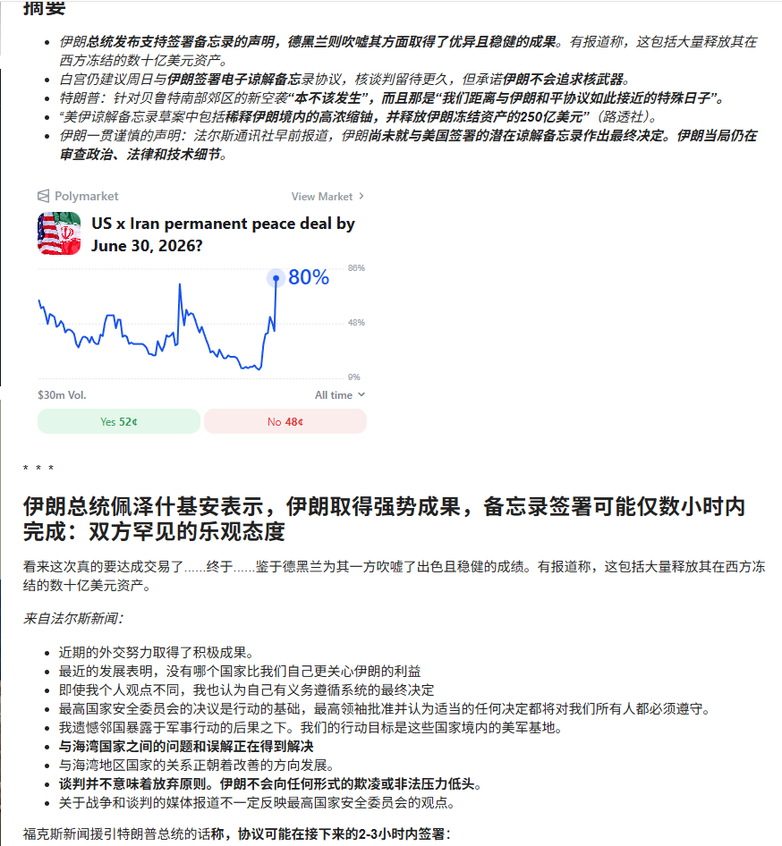
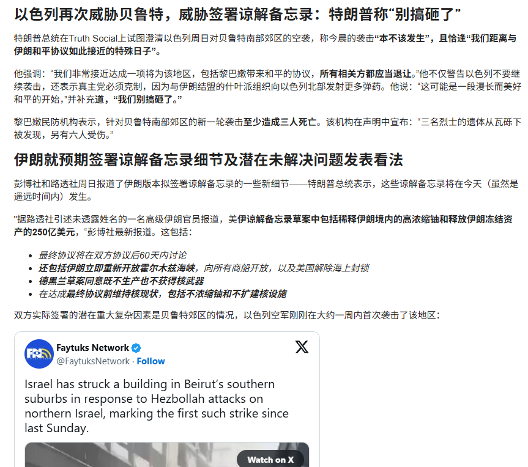


一句话核心：中东出现重大缓和——美伊宣布达成和平协议、霍尔木兹海峡恢复自由通行，这对全球油价是直接利空、对风险资产是利好。
背景与关键数据
- 霍尔木兹海峡是连接波斯湾和外海的咽喉，全球约五分之一的石油海运要从这里走。它一旦因冲突被威胁封锁，市场就会给油价打上"地缘溢价"（怕断供而多付的钱）；一旦"恢复自由通行"，这个溢价就会消退、油价回落。
- 各图传递的信息：
- 图 1（Polymarket 预测市场）："US x Iran permanent peace deal by June 30, 2026?（6 月 30 日前美伊达成永久和平协议？）"的成交概率一度冲到 80%（Yes 52¢、No 48¢，成交额 $30m）。预测市场是用真金白银下注的"群体概率"，比新闻标题更能反映市场对事件兑现的信心。配文翻译了伊朗总统的表态：取得"强势成果"、备忘录签署可能仅数小时内完成，姿态罕见乐观。
- 图 2：关于以色列空袭贝鲁特南郊的旧闻，作为冲突烈度的背景对照。
- 图 3：一份中文翻译的要点分析（外交努力取得成果、地区国家关系正趋向缓解等）。
- 图 4（关键）：巴基斯坦总理夏巴兹·谢里夫（@CMShehbaz）的推文（被 zerohedge 转发）正式宣布："经过密集会谈，美国与伊朗之间的和平协议已经达成，双方宣布立即、永久停止包括黎巴嫩在内所有战线的军事行动；正式签署仪式定于 6 月 19 日（周五）在瑞士举行"，并感谢卡塔尔、沙特、土耳其的斡旋。
图片解读
这组图的叙事链条很清楚：从"预测市场押注概率飙升"（图 1）→ "区域冲突的紧张背景"（图 2、3）→ "官方层面正式宣布达成并定下签署日期"（图 4）。从"市场预期"到"官方落地"层层递进，可信度逐图增强。
为什么重要 / 对市场和经济的含义
这是今天最有市场含义的事件，而且直接咬合帖 4 德银的核心假设（"霍尔木兹海峡 6 月恢复正常 → 油价回落"）。传导链：地缘缓和 → 油价下行 → 通胀压力减轻 → 央行更有空间、风险偏好回升 → 利好股票等风险资产，利空油气板块。这也解释了帖 4 里德银对油价 Q3/Q4 逐季走低的预测、以及"风险资产在地缘冲击中表现得异常抗跌"的判断。
延伸知识
- 地缘溢价（geopolitical risk premium）：油价里常包含一块"怕出事"的溢价。冲突升级时溢价上行、缓和时回吐。判断油价不能只看供需，还要看这块"情绪/风险"成分。
- 预测市场（prediction market）作为信息工具：像 Polymarket 这类平台让人对未来事件下注，价格 = 事件发生的隐含概率。它的好处是"用钱投票"，比口头民调更有约束力；但也要警惕流动性小、易被大额资金扰动。学会把它当成一个概率温度计，而不是水晶球。
帖 4 · 14:52 · 德意志银行：6 月跨资产市场观点总表 #金融#
帖子原文
德银：6 月跨资产市场观点总表
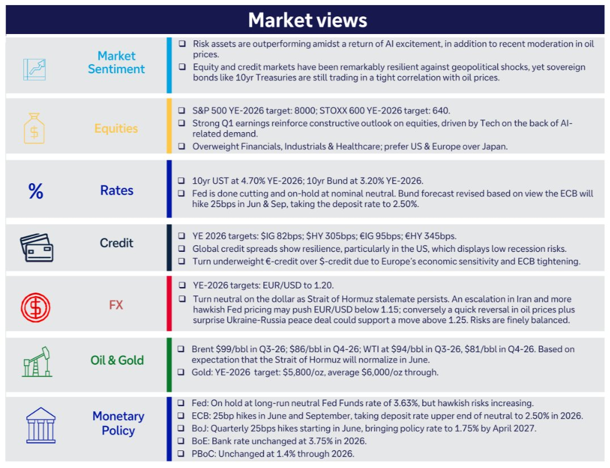
一句话核心：德银把对股、债、信用、汇、油金、货币政策的最新看法浓缩成一页——核心是"AI 热情回归 + 油价回落"撑起风险资产，给出了一整套到 2026 年底的目标位。
背景与关键数据（逐项翻译德银"Market views"总表）
- 市场情绪（Market Sentiment）：风险资产在"AI 热情回归 + 油价回落"下跑赢；股票和信用市场对地缘冲击表现得异常抗跌，但 10 年期美债等利率品种仍与油价高度同步。
- 股票（Equities）：标普 500 2026 年底目标 8000；欧洲 STOXX 600 目标 640。一季度强劲业绩强化对股票的乐观，主要由科技（AI 需求）驱动。超配金融、工业、医疗；地区上偏好美国和欧洲，看淡日本。
- 利率（Rates）：10 年美债年底目标 4.70%，10 年德债 3.20%。美联储已停止降息、维持在名义中性水平；上调德债收益率预测，因预计欧央行 6 月和 9 月各加息 25bp，把存款利率推到 2.50%。
- 信用（Credit）：年底目标——美国投资级利差 82bp、美国高收益 305bp；欧洲投资级 95bp、欧洲高收益 345bp。全球信用利差有韧性（美国尤其，显示衰退风险低）；把欧洲信用调为低配（因欧洲经济敏感性 + 欧央行收紧）。
- 外汇（FX）：欧元/美元年底目标 1.20。因霍尔木兹僵局对美元转中性；伊朗局势升级 + 美联储更鹰可能把欧元/美元压到 1.15 下方，反之油价快速回落 + 俄乌意外和平则可能上破 1.25，风险大致平衡。
- 油与金（Oil & Gold）：布伦特原油 Q3-26 $99、Q4-26 $86；WTI Q3-26 $94、Q4-26 $81——前提正是"霍尔木兹海峡 6 月恢复正常"。黄金 2026 年底目标 $5,800/oz，并向 $6,000/oz 攀升。
- 货币政策（Monetary Policy）：美联储维持长期中性利率 3.63%，但鹰派风险上升；欧央行 6/9 月各加 25bp 至 2.50%；日本央行从 6 月起每季加 25bp，到 2027 年 4 月升至 1.75%；英国央行 2026 年维持 3.75%；中国央行（PBoC）全年维持 1.4%。
图片解读
这是一张六行的"一页纸"跨资产观点表，左侧图标分别代表情绪、股票、利率、信用、外汇、油金、货币政策。看这种表的方法：先抓方向性结论（超配/低配、看多/看空），再记关键目标位（target）。德银的整体姿态是"对股票建设性、对油价偏空、对黄金长期看多、对各大央行节奏给出明确路径"。
为什么重要 / 对市场和经济的含义
这页表是今天的"导航图"，把零散的新闻装进一个连贯框架：油价回落（呼应帖 3 伊朗缓和）→ 通胀压力可控 → 美联储停手、欧日仍在加息 → 风险资产由 AI/科技领涨（呼应帖 1、帖 6 的成长主线）。注意一个反差：德银预计欧日还要加息、黄金却仍看到 6000 美元——黄金在加息环境里还被看多，通常反映对"长期信用风险、去美元化、央行购金"的押注，而非单纯的利率交易。
延伸知识
- 基点（bp）：1 个基点 = 0.01%。"利差 82bp"就是 0.82 个百分点。信用利差越宽，说明市场要求的"风险补偿"越高、越担心违约；利差收窄代表风险偏好上升。
- 卖方"目标价表"怎么用：投行的年底目标位会随行情不断修订，别把它当承诺，而要看它背后的假设链（这里就是"霍尔木兹 6 月恢复正常"）。一旦假设被证伪（比如冲突再起），目标位会被迅速推翻——这才是读研报的关键。
帖 5 · 14:55 · LatamData：中美在拉丁美洲的矿产投资规模 #金融#
帖子原文
LatamData：中美在拉丁美洲的矿产投资规模
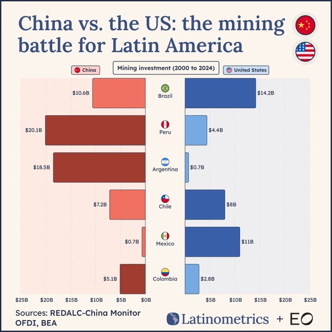
一句话核心：一张图看清中美在拉美关键矿产上的"争夺战"——中国在南美的锂铜三角（秘鲁、阿根廷、智利）投资遥遥领先，美国则在巴西、墨西哥更强。
背景与关键数据
图表"China vs. the US: the mining battle for Latin America"对比 2000–2024 年累计矿业投资（红=中国，蓝=美国，来源 REDALC-China Monitor OFDI、BEA）：
| 国家 | 中国投资 | 美国投资 | 谁领先 |
|---|---|---|---|
| 巴西 | $10.6B | $14.2B | 美国 |
| 秘鲁 | $20.1B | $4.4B | 中国（约 5 倍） |
| 阿根廷 | $18.5B | $0.7B | 中国（约 26 倍） |
| 智利 | $7.2B | $8B | 接近，美国略高 |
| 墨西哥 | $0.7B | $11B | 美国（约 16 倍） |
| 哥伦比亚 | $5.1B | $2.8B | 中国 |
图片解读
这是一张"对称条形图"（左红右蓝，国旗居中）。横轴是投资金额（左右各到 $25B），每一行一个国家。看图要点：中国的红条在秘鲁、阿根廷上明显比美国长得多——这正是全球**铜（秘鲁、智利）和锂（阿根廷、智利的"锂三角"）**的核心产区；而美国的优势集中在地理临近的巴西和墨西哥。一句话，中国把钱重点压在了"南美的电池/电气化金属带"上。
为什么重要 / 对市场和经济的含义
关键矿产（铜、锂、稀土等）是新能源、电动车、AI 数据中心电气化的"工业粮食"。谁锁定上游矿权，谁就在能源转型和科技竞赛里握住供应链的命门。中国在南美锂铜的领先，意味着在这些金属的长期供应与定价上有更大话语权；美国则更依赖近岸的巴西、墨西哥。这条线索把"地缘政治"和"大宗商品/新能源产业链"连在了一起，是理解未来铜、锂价格与供应安全的重要背景。
延伸知识
- "锂三角"（Lithium Triangle）：指阿根廷、智利、玻利维亚交界的高原盐湖区，储量占全球锂资源的一大半。这也是为什么阿根廷虽小，却是中国矿业投资的重点。
- 资源民族主义（resource nationalism）：当某种矿产变得战略性紧俏，资源国往往会提高税费、要求更高本地权益甚至国有化（如智利对锂、墨西哥对部分矿产的政策收紧）。外部投资再多，也要承担东道国政策突变的风险——这是投资上游资源股时绕不开的变量。
帖 6 · 15:00 · 方正证券：A 股极致分化，科技强、传统弱 #A股#
帖子原文
方正：2026 年以来 A 股市场行情呈现较大的分化特征，一方面电子、通信等科技行业涨幅较大，另一方面非银金融、消费板块则跌幅超 10%。这种极致分化特征在板块估值中表现更为明显，一边是少部分行业处在历史最高分位数，另一边是部分行业估值处在历史最低分位数，以至于从估值角度看很难用牛市或熊市来描述当下市场。
资本市场表现分化的背后，是各行业板块间产业景气度的差异。全球人工智能 AI 产业链快速发展、科技巨头企业资本开支指数级增长，带动 A 股上市公司中半导体、通信设备（光模块）等行业 ROE 大幅提升甚至创历史新高。相比而言，房地产、消费等传统内需行业，产业景气度仍处在调整筑底过程中。在市场交易中，移动互联网时代信息快速流通，这种"信息杠杆"容易进一步放大资产价格表现差异。
从 2024 年 9 月至今，领涨的半导体板块和通信设备板块，目前的涨幅仍以市盈率抬升为主，属于阶段一涨估值阶段。后续随着相关公司业绩高增长释放，板块阶段二涨业绩行情依然值得期待。
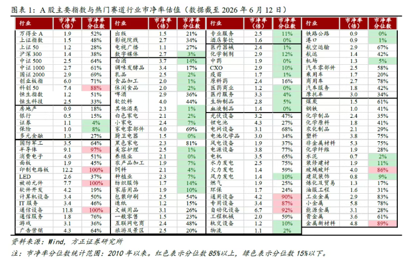
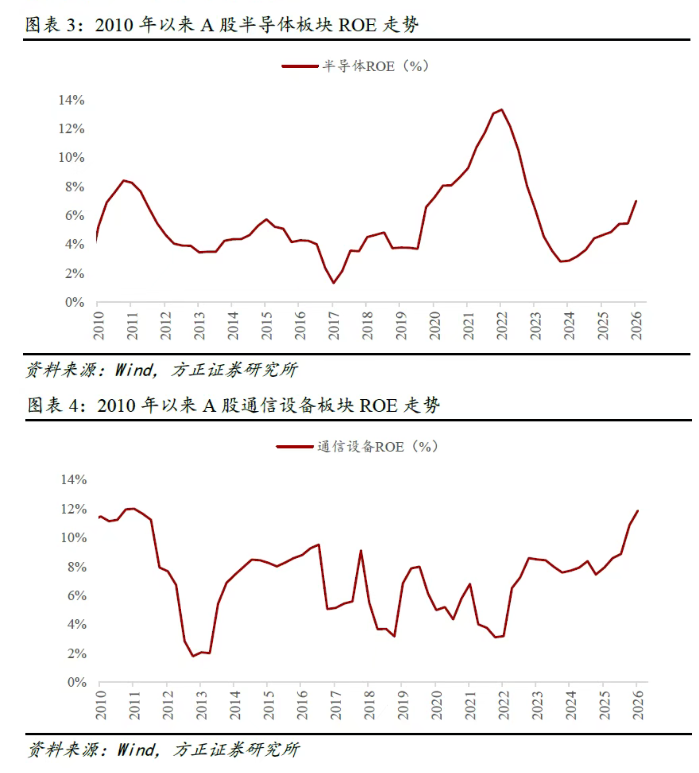
一句话核心：A 股不是普涨也不是普跌，而是"科技顶天、传统垫底"的极端分化；方正认为半导体、通信现在还处在"涨估值"的第一阶段，未来"涨业绩"的第二阶段还可期待。
背景与关键数据
- 估值分位数是什么？把某行业过去很多年的市盈率（PE）排个队，今天的 PE 排在历史的百分之几，就是"分位数"。处在"历史最高分位"= 比过去绝大多数时候都贵；"历史最低分位"= 比过去绝大多数时候都便宜。当前 A 股是一头（科技）在最高分位、另一头（金融、消费）在最低分位，所以"牛市/熊市"这种整体描述失效了。
- 关键数字：2026 年以来电子、通信涨幅居前，非银金融、消费跌幅超 10%。
- "两阶段"行情框架：第一阶段"涨估值"（业绩还没兑现，先靠情绪和资金把 PE 抬上去）；第二阶段"涨业绩"（公司利润真的高增长，由盈利推动股价）。方正认为半导体/通信目前主要是第一阶段，第二阶段还在后头。
图片解读
- 图 1（表）："A 股主要指数与热门赛道行业"的估值分位数对照表（数据截至 2026-6-12）。每一行是一个指数或赛道，列出当前估值与所处历史分位。它把帖子说的"一边最高分位、一边最低分位"用数字摊开，是分化的量化证据。
- 图 2（两张走势图）：上图"2010 年以来 A 股半导体板块 ROE 走势"——ROE 在 2022 年见顶约 13%，随后回落，近期回升到约 7%；下图"通信设备板块 ROE 走势"——近年快速抬升，2026 年冲到约 12%，逼近历史高位。**ROE（净资产收益率）**衡量公司用股东的钱赚钱的效率，是"盈利质量"的核心指标。两张图说明科技板块的高股价背后，确有盈利能力（ROE）创新高的产业逻辑支撑，不完全是炒概念。
为什么重要 / 对市场和经济的含义
这帖把帖 1、帖 2 的宏观判断落到 A 股结构上：中国整体信用偏弱（钱不多）、需求偏冷，于是有限的资金高度集中到少数高景气的 AI/科技链，导致极端分化。投资含义有两面：看多者认为科技还有"第二阶段涨业绩"的空间；谨慎者会担心高分位估值的拥挤交易一旦逆转，回撤会很猛。方正的"ROE 创新高"图，是支撑"这次科技行情有基本面"的关键论据。
延伸知识
- 市盈率（PE）= 股价 ÷ 每股盈利：估值贵不贵的最常用尺子。"涨估值"= PE 变大（市场愿意给同样的利润付更多钱）；"涨业绩"= 盈利 E 变大。健康的长牛通常是"业绩驱动"，单纯"估值驱动"则更脆弱。
- 杜邦分析看 ROE：ROE 可拆成"净利率 × 资产周转率 × 杠杆"。科技板块 ROE 创新高，若主要来自净利率（产品好卖、定价强）而非加杠杆，质量更高。学会拆 ROE，能帮你分辨"真成长"和"靠负债撑出来的虚胖"。
帖 7 · 15:03 · 广发证券：用五个周期给当下"套帽子" #金融#
帖子原文
广发：套一套各周期的帽子
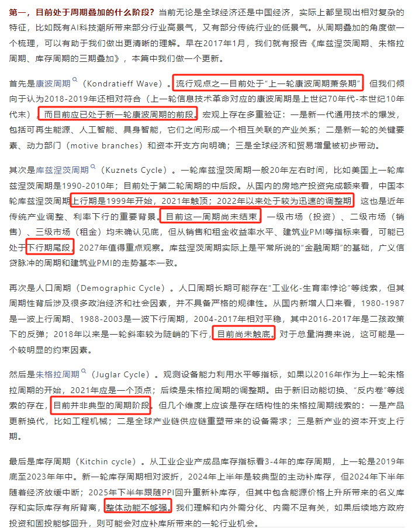
一句话核心：广发把经济里五个长短不一的周期（康波、库兹涅茨、人口、朱格拉、库存）叠在一起，给"现在到底处于什么阶段"做了一次全面定位——结论是"新旧动能切换、多周期错位叠加"的复杂期。
背景与关键数据（逐个周期翻译图中要点）
- 康波周期（Kondratieff Wave，约 50–60 年，由技术革命驱动）：流行观点认为目前处于"上一轮康波萧条期"，但广发倾向认为已进入新一轮康波的前段。验证有三：①新一代通用技术爆发（可再生能源、人工智能、具身智能）；②新的关键要素、动力部门和资本开支方向明确；③全球经济与贸易增量被初步带动。
- 库兹涅茨周期（Kuznets Cycle，约 20 年，地产/建筑驱动）：美国上一轮 1990–2010 年；国内本轮上行从 1999 年开始、2021 年触顶，2022 年以来快速调整——这是近年传统产业调整、利率下行的重要背景。目前调整尚未结束，一级（投资）、二级（销售）、三级（租金）市场均未触底，2027 年值得重点观察。库兹涅茨周期其实是平常说的"金融周期"的基础，与广义信贷脉冲、建筑业 PMI 走势基本一致。
- 人口周期（Demographic Cycle）：国内新增人口 1980–1987 上行、1988–2003 下行、2004–2017 平缓，2018 以来一轮陡峭下行，目前尚未触底，是总量消费的明显约束。
- 朱格拉周期（Juglar Cycle，约 8–10 年，设备投资驱动）：若以 2016 为上一轮起点、2021 为顶点，目前是调整期；但因新旧动能切换、"反内卷"等线索，并非典型阶段。结构性机会在：产品更新换代（如工程机械）、全球供应链重塑带来的设备需求、新产业资本开支上行。
- 库存周期（Kitchin Cycle，约 3–4 年）：上一轮 2019 年底至 2023 年底；新一轮 2024 上半年被动补库、下半年起主动补库，2025 下半年跟随 PPI 重新补库，但整体动能不够强（与内外需分化、内需不足有关）。若地方政府投资和固投回升，可能带来一轮补库行业机会。
图片解读
这张图是广发研报的文字版"周期叠加"梳理（沿用其 2017 年《三期叠加》报告框架）。它不是数据图，而是把五个周期当下的"位置标签"一一列出。读它的窍门：先记住每个周期的长度和驱动力（康波看技术、库兹涅茨看地产、人口看出生、朱格拉看设备、库存看补/去库），再看广发给每个周期贴的标签——你会发现多数偏"调整/前段/尚未触底"，唯独康波被定性为"新一轮前段"，这正是"科技强、传统弱"的深层周期解释。
为什么重要 / 对市场和经济的含义
这帖是今天最有"体系感"的一篇，等于给前面所有现象提供了一个统一的底层框架：康波新周期（技术爆发）→ 解释 AI/科技的强；库兹涅茨与人口周期仍在探底 → 解释地产、消费等传统内需的弱。它告诉你当下分化不是偶然的情绪，而是多个长周期错位叠加的必然结果。对资产配置的含义：顺着"新康波"方向（科技、新能源、具身智能）找结构性机会，对依赖地产/人口的传统总量逻辑保持耐心。
延伸知识
- 四大经济周期速记：康波（技术，约 50 年）＞库兹涅茨（地产，约 20 年）＞朱格拉（设备，约 10 年）＞基钦/库存（约 3–4 年）。它们像四个齿轮，长周期决定大方向，短周期决定节奏。"周期叠加"分析就是看这几个齿轮此刻是同向助推还是相互抵消。
- "反内卷"与朱格拉：当行业产能过剩、低价厮杀（内卷）时，政策推动"反内卷"（限产能、促升级）会改变设备投资节奏，使朱格拉周期偏离教科书式规律。这解释了广发为何说"目前并非典型周期阶段"。
帖 8 · 15:11 · zerohedge：协议确认，但更多内容尚未流出 #金融#
帖子原文
zerohedge：目前尚未流出更多协议内容
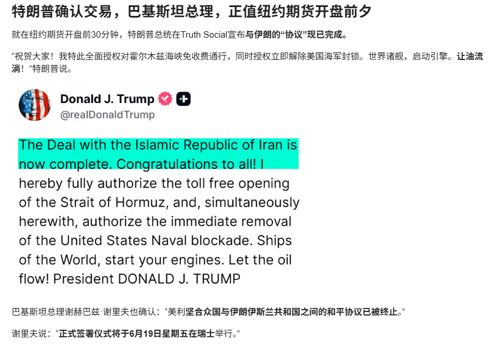
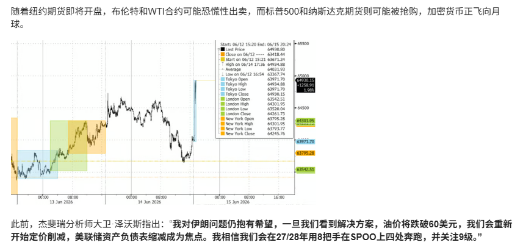
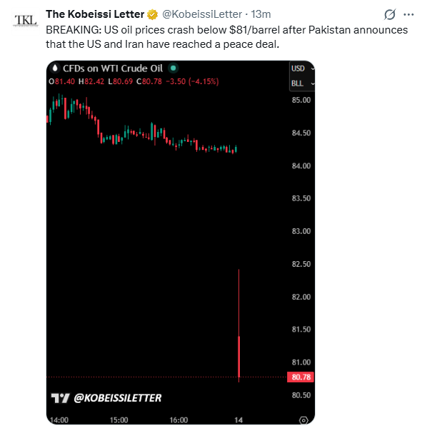
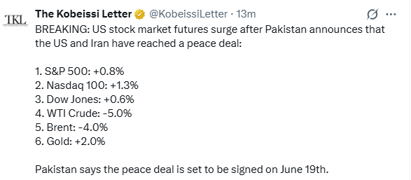
一句话核心：作为帖 3 的后续——特朗普本人在 Truth Social 确认"与伊朗的协议现已完成"，并喊话开放霍尔木兹、解除海军封锁、"让石油自由流动"；但除了表态，协议的具体条款尚未公开。
背景与关键数据
- 图 1（关键）：特朗普 Truth Social 原帖——"The Deal with the Islamic Republic of Iran is now complete. Congratulations to all!（与伊朗的协议现已完成，祝贺所有人！）"并宣布"授权霍尔木兹海峡免费开放、立即解除美国海军封锁，世界诸船，启动引擎，让石油自由流动！"巴基斯坦总理夏巴兹也再次确认美伊之间的敌对已经终止，正式签署仪式将于 6 月 19 日（周五）在瑞士举行。
- 其余几张图为相关推文与新闻的中文转写，但正如帖子标题所说："目前尚未流出更多协议内容"——也就是细节（核问题、制裁解除范围、监督机制等）还没披露。
图片解读
这组图与帖 3 高度重叠，是事件的"确认/补充"。图 1 是最高决策者本人的原始声明（一手信源），可信度最高；其余是媒体与第三方的转述。Jason 连发两帖（帖 3、帖 8），且帖 8 特意点出"更多内容尚未流出"，意在提醒：方向已定，但落地细节存在不确定性，别只凭一句口号就把交易做满。
为什么重要 / 对市场和经济的含义
它强化了帖 3 的结论，也补了一个重要的风险提示：市场往往先对"标题"做出剧烈反应（油价跳水、风险资产上涨），但真正的影响取决于协议细节——制裁解除多少、伊朗石油出口能恢复多少、监督机制是否可信。如果 6 月 19 日签署顺利、条款落地，油价回落的逻辑就坐实（呼应帖 4 德银油价预测）；若细节生变或签署推迟，已经被市场提前消化（price-in）的乐观可能反转。这正是 Jason 把"尚未流出更多内容"单独拎出来的用意。
延伸知识
- "Buy the rumor, sell the news"（买预期，卖事实）：重大事件常在"预期阶段"就被资产价格提前消化，等"靴子落地"反而获利了结。面对美伊协议这种已被预测市场打到 80% 的事件，要警惕"利好兑现即出货"的反转。
- 一手信源 vs 二手转述：做事件驱动判断时，元首/官方原帖（如本帖图 1 的总统原声明）权重最高，社交媒体转述和"翻译稿"可能有偏差或夸大。建立"信源分级"习惯，能让你在嘈杂的突发新闻里少被带节奏。
今日全图索引
| 帖号 | 时间 | 主题 | 标签 | 图片文件 |
|---|---|---|---|---|
| 1 | 14:07 | 摩根大通：中美信用脉冲与成长 vs 价值 | #金融# | post1_img1.png |
| 2 | 14:31 | 长江证券：票据利率历史低位、实体需求弱 | #金融# | post2_img1.png |
| 3 | 14:36 | 美伊达成和平协议、霍尔木兹海峡开放 | #金融# | post3_img1.png、post3_img2.png、post3_img3.png、post3_img4.png |
| 4 | 14:52 | 德意志银行：6 月跨资产市场观点总表 | #金融# | post4_img1.png |
| 5 | 14:55 | 中美在拉美的矿产投资争夺 | #金融# | post5_img1.png |
| 6 | 15:00 | 方正证券：A 股极致分化、科技 ROE 创新高 | #A股# | post6_img1.png、post6_img2.png |
| 7 | 15:03 | 广发证券：五大周期叠加定位 | #金融# | post7_img1.png |
| 8 | 15:11 | 特朗普确认美伊协议、细节尚未公开 | #金融# | post8_img1.png、post8_img2.png、post8_img3.png、post8_img4.png |
原始高清图片保存在
daily_summaries/jason_images/2026-06-14/子目录；本报告（嵌入版）已将图片转为 base64 自包含。